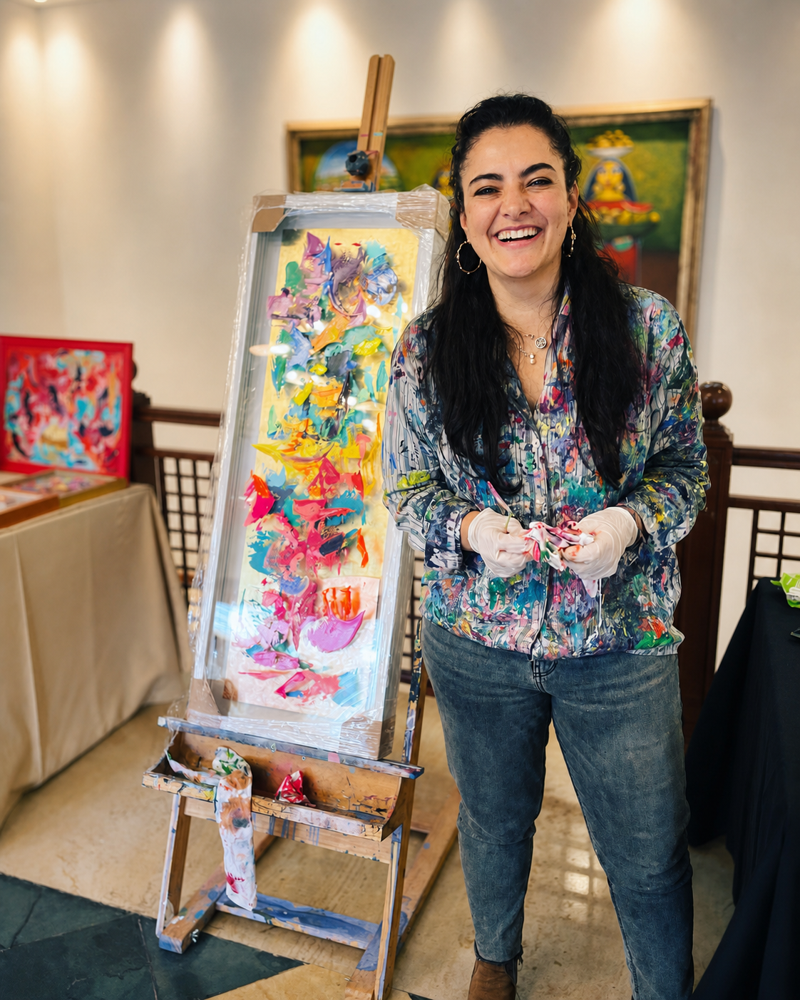
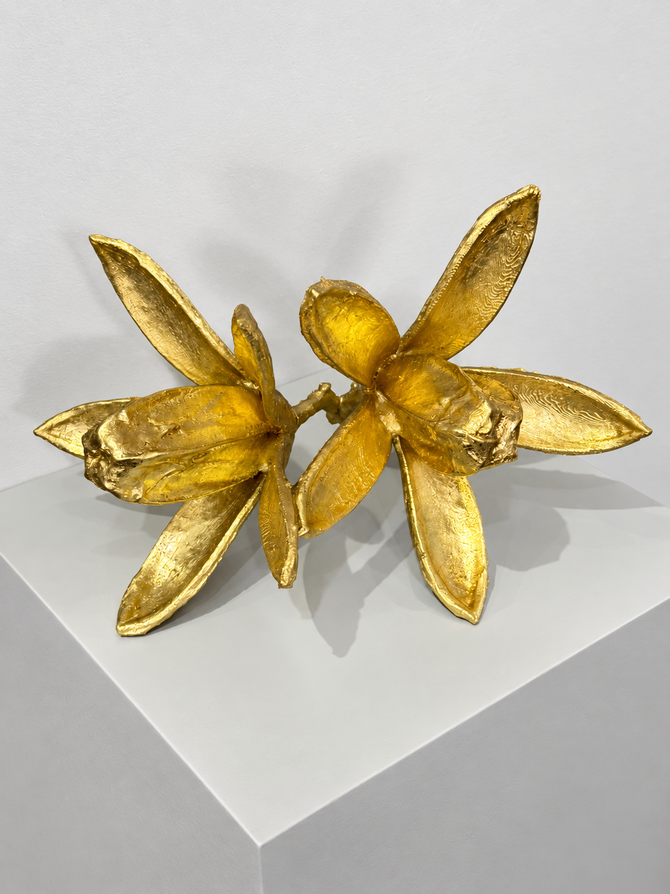

DESHOJANDO MARGARITAS · 2025
Serie: Outside the Box
Escultura · Técnica mixta
123 × 53 × 9 cm
$8.000.000 COP
Serie: Outside the Box
Escultura · Técnica mixta
123 × 53 × 9 cm
$8.000.000 COP
Su práctica explora el color, la luz y el óleo como materia viva, transformando la experiencia visual en un espacio de memoria y movimiento.

La búsqueda constante de María Paula Alzate Afanador es el color. Durante los últimos cinco años ha explorado la relación entre la luz, aquello que une a la humanidad y el óleo como materia siempre viva: una metáfora de transformación y movimiento que se amasa y se estira. En su obra, el óleo representa la vida, el paso del tiempo, la longevidad y también la muerte.
Alzate Afanador entiende los colores como portadores de conocimiento y herramientas para revelar aquello que no siempre puede decirse con palabras. Desde la sutileza de los matices y las tonalidades, su obra captura formas, emociones, intenciones y texturas que invitan al espectador a encontrar significados y realidades ocultas a simple vista.
Fichas técnicas y precios disponibles para las obras confirmadas.
